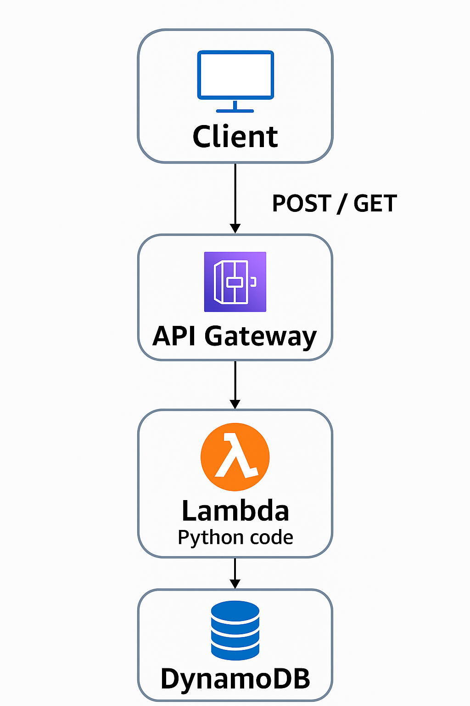

Notes API
Tech Stack: AWS Lambda, API Gateway, DynamoDB, Python
Overview
This API allows users to create, read, update, and delete notes. It was built as a serverless project using AWS services.
Architecture
Screenshots


Key Features
- Serverless CRUD operations with Lambda
- Secure endpoints via API Gateway
- DynamoDB for storage
- Scalable and low-cost cloud-native design